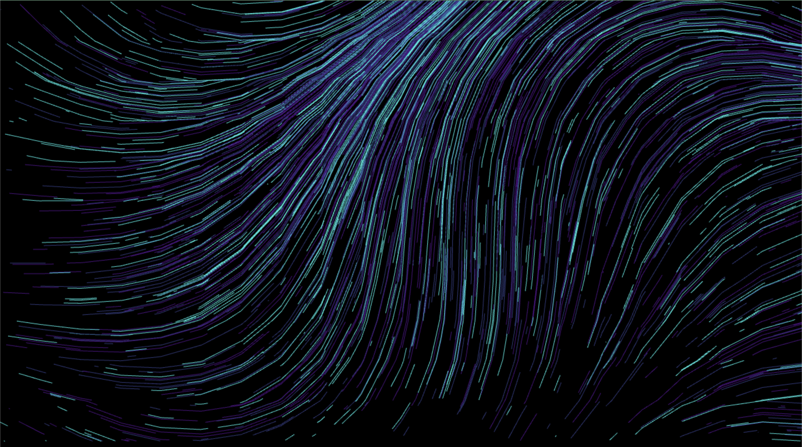
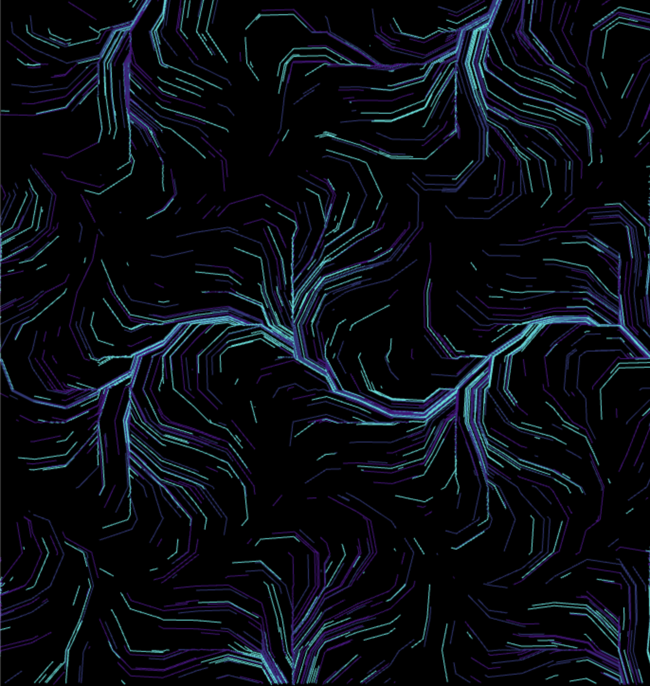

I did a project on TouchDesigner a few months ago called Sillage, where the user interacts with a dynamic display on their laptop screens. The visual consisted of a waterfall of glowing blue particles with a deep blue and purple trail, and the user waves their hands in front of the webcam to make the visuals move.

Since this project had a similar brief, I decided to jump off of that project and decided to create something similar. I was assigned the "resize" interaction, and I wanted to create a similar abstract site. So I decided to, again, create a piece of generative art with trails and particles, but adapt it to the medium of the web using HTML, CSS and Javascript so that the particle flow changes when the browser window is resized.
I decided to first create the entire flow field, and then link the necessary parameters to the browser window size. I did this by first dividing the entire canvas into a grid. The basic logic behind the particle movement is that all the particles will flow in one direction in any given grid square, and all of these grid squares put together would create the illusion of movement.
Since the particles have to cover the whole screen, I assigned random x and y coordinates for
their origins. I also assigned all of them random speeds, so that the effect seems more natural. An array was
then created to keep track of all of the positions of the particles, and then all these positions were accessed
by looping through the array to create a path. To set the colors of the particle system, another array with the
three colors (turquoise, purple and blue) was created and the particles were randomly assigned one of these
colors.
I also wanted to have the particles follow a mathematical curve, a combination of a sine curve and a cosine
curve, so an angle was also defined at this point that would affect the movement. So far, the particles left
behind a path as they moved, but the effect of movement wasn't created as the drawn path remained static. To
create the effect of a disappearing trail, the shitf() function was used to continuously delete one segment from
the beginning of the path and the push() function was used to continuously add a segment at the end of the path.
This updates continuously in a loop, giving the effect of a disappearing trail. A reset() function is then
defined to reset this animation loop.
In a constructor method, a few basic parameters were defined such as the number of particles,
grid size, curve of the path, the zoom factor, and an array that held the angle values for the individual grid
cells.
Then, to create set the path and direct the flow of particles, I set the mathematical equation of the curve
within the nested for loops created to access the grid squares
Initially, I wanted to use a javascript library to make interaction easier, but then I realised that adding this interaction was easy enough in Vanilla Javascript as well. A resize function was added within the Effect Class right after the code that defined the path of the particles. Each time the window is resized, the width and height of the canvas is updated to the new height and width of the window. An event listener was also added for the window resize. Within this resize function, the initialize function is called at the very end so that the browser refreshes every time the window is resized and displays the pattern. To change the pattern being displayed, however, I linked three curve parameters to the width of the window, so that they change dynamically: the curve, the zoom and the grid size. Hence, now the pattern of the flow field depends on the width of the browser window.
Here are a few screengrabs of some of the patterns at different window widths.
Pattern at 100% window width
Pattern at 70% window width
Pattern at 40% window width
Pattern at 30% window width
Pattern at 10% window width
